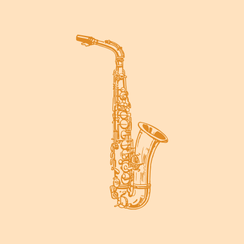
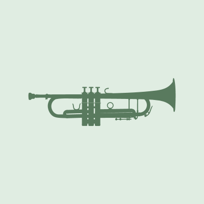
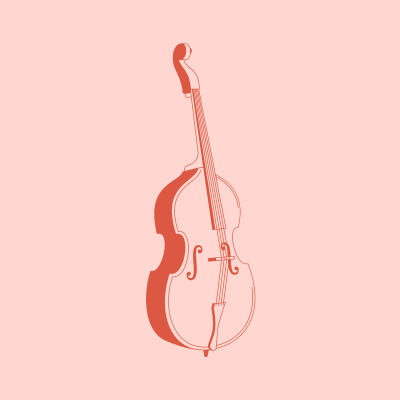

Welcome to Jazz Fanzz! Whether you're a Jazz enthusiast or just discovering jazz, this is the perfect place to explore. Dive into the mesmerizing world of jazz music.
Learn about the history of Jazz music and the eras throughout the years
AboutLearn about some of the top Jazz artist of all time and listen to their music
ArtistsSee upcoming Jazz Events and book your tickets
EventsTop Jazz Instruments
Piano

Saxophone

Trumpet

Double Bass